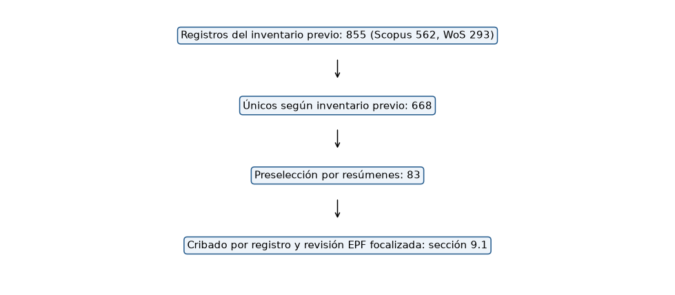
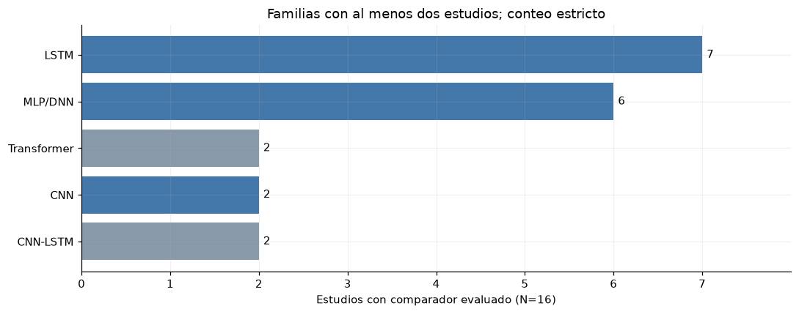

9. Literatura consultada e implicaciones metodológicas#
La revisión integra un inventario de Scopus y Web of Science, una preselección de estudios, una consulta dirigida de textos completos y cinco exportaciones de abstracts de IEEE Xplore analizadas en la sección 9.3. Los conteos del cribado previo se presentan junto con una auditoría de las exportaciones disponibles. La documentación del inventario presenta limitaciones de trazabilidad en las cadenas originales, los motivos de exclusión por registro y la revisión independiente.
Las extracciones verificadas comprenden Time-MMD, NSW-EPNews, Tan y colaboradores, Lago y colaboradores, REST-TS, TeR-TSF y TimesX. El directorio literature/ registra versiones, fuentes, huellas y localizadores de resultados. La caracterización de modelos de referencia se fundamenta en su descripción metodológica en texto completo.
%matplotlib inline
from pathlib import Path
ROOT = next(
directory for directory in [Path.cwd(), *Path.cwd().parents]
if (directory / "data/manifest.json").exists()
)
from IPython.display import Markdown, display
import json
import pandas as pd
import matplotlib.pyplot as plt
RESULTS = ROOT / 'results'
RESULTS.mkdir(exist_ok=True)
(RESULTS / 'figures').mkdir(exist_ok=True)
(RESULTS / 'tables').mkdir(exist_ok=True)
plt.rcParams.update({'figure.figsize': (11, 4.4), 'figure.dpi': 110, 'savefig.dpi': 160, 'axes.spines.top': False, 'axes.spines.right': False, 'axes.grid': True, 'grid.alpha': 0.18, 'axes.prop_cycle': plt.cycler(color=['#245b8d', '#d17a32', '#2b8c77', '#8c5da8', '#9a4949'])})
pd.set_option('display.max_rows', 35)
pd.set_option('display.max_columns', 14)
pd.set_option('display.float_format', lambda x: f'{x:.5g}')
import json
meta = json.loads((ROOT / 'literature/inherited_prisma_counts.json').read_text(encoding='utf-8'))
counts = pd.Series({k: meta[k] for k in ['registros_exportados', 'scopus', 'wos', 'unicos', 'seleccionados']}, name='inventario_previo')
table(counts.to_frame(), 'literatura_inventario_previo')
| inventario_previo | |
|---|---|
| registros_exportados | 855 |
| scopus | 562 |
| wos | 293 |
| unicos | 668 |
| seleccionados | 83 |
audit = json.loads((ROOT / 'literature/raw_export_audit.json').read_text(encoding='utf-8'))
table(pd.DataFrame({'exportación_actual': [audit['scopus_current_publication_ids'], audit['wos_current_records']], 'inventario_previo': [audit['inherited_scopus_count'], audit['inherited_wos_count']]}, index=['Scopus', 'Web of Science']), 'literatura_conciliacion_exportaciones')
| exportación_actual | inventario_previo | |
|---|---|---|
| Scopus | 615 | 562 |
| Web of Science | 293 | 293 |
La exportación actual de Scopus contiene 615 identificadores distintos, mientras el inventario previo registra 562. La diferencia de 53 registros no está conciliada por artículo. El inventario previo y la exportación actual se presentan por separado hasta completar su conciliación.
selected = pd.read_csv(ROOT / 'literature/inherited_selected_83.csv')
fig, ax = plt.subplots(figsize=(9, 4))
ax.axis('off')
boxes = [(0.9, f"Registros del inventario previo: {meta['registros_exportados']} (Scopus {meta['scopus']}, WoS {meta['wos']})"), (0.65, f"Únicos según inventario previo: {meta['unicos']}"), (0.4, f"Preselección por resúmenes: {meta['seleccionados']}"), (0.15, 'Cribado por registro y revisión EPF focalizada: sección 9.1')]
for y, label in boxes:
ax.text(0.5, y, label, ha='center', va='center', bbox=dict(boxstyle='round', fc='#eef4fa', ec='#245b8d'))
for y in [0.82, 0.57, 0.32]:
ax.annotate('', xy=(0.5, y - 0.08), xytext=(0.5, y), arrowprops=dict(arrowstyle='->'))
figure(fig, 'flujo_bibliografico_parcial')

Resultados extraídos de los estudios#
La tabla sintetiza resultados publicados junto con su problema, conjunto de datos, modelos y métricas. Las diferencias de escala, frecuencia, horizonte y protocolo requieren interpretar cada resultado en su contexto experimental.
verified = pd.read_csv(ROOT / 'literature/verified_extracts.csv')
table(verified, 'literatura_resultados_verificados')
| referencia | problema | dataset | modelos_comparados_verificados | metrica | valores_reportados | localizador | url | limite_de_comparabilidad | |
|---|---|---|---|---|---|---|---|---|---|
| 0 | Liu et al. (2024), Time-MMD | Pronóstico multimodal | Energy: gasolina semanal | DLinear uni/multimodal; otros backbones | MSE | H=12: 0.26 unimodal; 0.22 multimodal | Tabla 12, p.33 del PDF v2 | https://arxiv.org/pdf/2406.08627v2 | Escala del benchmark; no COP ni precio eléctrico. |
| 1 | Tan et al. (2024) | Ablación del LLM sobre series numéricas | ETTh1; promedio de horizontes de la tabla | Time-LLM; sin LLM; atención; Transformer | MSE | Time-LLM 0.417; sin LLM 0.405 | Tabla 3, p.6 del PDF v2 | https://arxiv.org/pdf/2406.16964v2 | No evalúa añadir noticias exógenas; no demuest... |
| 2 | Bi et al. (2025), NSW-EPNews | Pronóstico de precio eléctrico con texto/clima | NSW 2015–2024; subconjunto reciente 50% | ARIMA; LR; XGBoost; ChatGPT-4o; Gemini 1.5 Pro | MAE | ARIMA 54.579; ChatGPT-4o zero-shot 53.646; abl... | Tabla 2, p.7; definición de ablation tabla 1 | https://arxiv.org/pdf/2506.11050v1 | Ablación elimina noticias y temperatura; no aí... |
| 3 | Lago et al. (2021) | Precio eléctrico del día siguiente | NP, ejemplo de cinco mercados | DNN feed-forward; LEAR regularizado | MAE | DNN3 1.712; LEAR84 1.952 | Tabla 2, p.15 | https://doi.org/10.1016/j.apenergy.2021.116983 | Unidades del mercado original; no trasladar el... |
| 4 | Nguyen et al. (2026), REST-TS | Fusión multimodal y text collapse | Time-MMD; TimeBridge, promedio de horizontes | Unimodal; MM-TSFLib; TaTS; REST-TS | MSE | Energy: TaTS 0.297; REST-TS 0.261. Traffic: 0.... | Tabla 1, p.7 | https://arxiv.org/pdf/2606.19413 | No mejora en toda combinación; separar utilida... |
| 5 | Su et al. (2025), TeR-TSF | Refuerzo de texto para pronóstico | Time-MMD, promedio entre dominios | TSF-only; TSF+Text; TSF+TeR; TeR-TSF | MSE | 0.771; 0.768; 0.953; 0.631, respectivamente | Tabla 2, p.7 | https://arxiv.org/pdf/2509.00687 | Promedios de dominios y configuración del artí... |
| 6 | Liu et al. (2026), TimesX | Auditoría de evaluación multimodal | Time-MMD, reemplazo de contexto textual | LLM con contexto original y con contexto de lo... | MASE agregada geométrica | Contexto original 0.906; contexto de autores 0... | Tabla 3 y apéndice S | https://arxiv.org/pdf/2607.06973 | El contraste cambia contexto, no sólo arquitec... |
Time-MMD. Integra series numéricas y texto alineado en varios dominios. La comparación de DLinear en Energy aporta evidencia sobre la incorporación de información textual en una serie semanal de gasolina. Su aplicación al precio eléctrico requiere evaluar cobertura, fechas de publicación y estabilidad de las versiones documentales. Texto completo, apéndices D.4, K y tabla 12.
Tan y colaboradores. Las ablaciones reemplazan o retiran el LLM en modelos alimentados por series numéricas. Sus resultados fundamentan la inclusión de referencias numéricas fuertes y evaluaciones del aporte de cada componente bajo presupuestos comparables. Texto completo, secciones 3–4 y tabla 3.
NSW-EPNews. Combina precios eléctricos, temperatura y noticias. El desempeño depende del modelo y de la configuración. La ablación retira simultáneamente noticias y temperatura; para estimar el aporte específico del texto se requiere mantener constantes las covariables numéricas. Texto completo, secciones 3–4, tablas 1–2 y apéndice C.
Lago y colaboradores. Comparan redes densas y regresión autorregresiva regularizada en distintos mercados eléctricos. El benchmark fundamenta la evaluación temporal, la inclusión de referencias competitivas y el reporte conjunto de errores absolutos y relativos. Texto completo, secciones 3–6 y tabla 2.
REST-TS. Examina la sensibilidad de la rama textual y propone supervisión sobre residuos. La variación de resultados entre dominios fundamenta las ablaciones con texto placebo y las comparaciones con una estructura numérica común. Texto completo, secciones 3–4 y tabla 1.
TeR-TSF. Compara texto original, generado y ajustado mediante refuerzo. La sensibilidad al procedimiento de generación destaca la importancia de conservar la procedencia del texto y separar los datos utilizados en el ajuste y la evaluación. Texto completo, método y tabla 2.
TimesX. Analiza el efecto de sustituir el contexto textual y los riesgos de contaminación asociados al preentrenamiento. Sus resultados fundamentan el control de versiones y la igualdad de información disponible entre modelos. Texto completo, sección 3, tabla 3 y apéndice S.
Documentación complementaria#
Los planes de investigación del programa orientan la documentación de fuentes, cobertura, calidad y diccionario de variables. La lista de artículos y datasets aportada se incorpora como inventario bibliográfico complementario. La síntesis de resultados utiliza las extracciones verificadas en los artículos completos.
Implicaciones para el diseño del pronóstico#
Las familias MLP, LSTM y CNN1D ofrecen representaciones complementarias de las relaciones entre rezagos, la memoria temporal y los patrones locales. La revisión focalizada de las secciones 9.1–9.2 verifica su uso como referencia y fundamenta su selección conjunta mediante frecuencia, estructura y costo.
La evaluación del aporte textual requiere comparar modelos con el mismo bloque numérico, los mismos orígenes y una política común de disponibilidad. Los mecanismos de agrupamiento y fusión deben ajustarse con entrenamiento. La incertidumbre sobre versiones retrospectivas se incorpora al análisis de sensibilidad del diseño experimental.
9.1 Revisión de uso efectivo como referencia comparativa#
La pregunta de esta revisión es qué familias neuronales numéricas se utilizan como referencias comparativas para pronosticar precios eléctricos. Se examinan estudios empíricos y benchmarks cuyo problema principal es el precio eléctrico continuo, con datos reales y texto completo disponible entre 2018 y el 6 de noviembre de 2026. El componente empírico de Lago et al. (2021) se incluye como benchmark; su síntesis secundaria no aporta observaciones adicionales.
El cribado por título y resumen de los 83 registros heredados no identificó estudios centrados en esta comparación. Los métodos generales, el pronóstico de demanda o pérdidas y los estudios financieros se conservan como contexto del proyecto multimodal. Cada decisión y su motivo se registran en screening_inherited.csv. Esto no significa que se hayan revisado 83 textos completos.
Se realizó una búsqueda pública complementaria mediante títulos exactos y combinaciones de electricity price forecasting, MLP/DNN, LSTM, CNN, benchmark y baseline, seguida de recuperación en editoriales, repositorios institucionales, sitios de autores, arXiv y Europe PMC. La búsqueda es focalizada y su cobertura no es exhaustiva. El registro de recuperación conserva tanto los textos examinados como los candidatos pendientes. Las frecuencias describen el corpus recuperado; no estiman la prevalencia en toda la disciplina.
La unidad de conteo es el estudio único por familia. Varios mercados, tamaños, semillas o configuraciones aportan una sola presencia. Se incluyen modelos efectivamente evaluados como comparadores y referencias de benchmarks sin arquitectura original propia. Se excluyen del conteo estricto las propuestas, los componentes, los controles de ablación y las menciones bibliográficas. Se mantiene en el denominador todo estudio empírico elegible, incluso cuando sólo compara variantes de su propuesta o no utiliza ninguna de las tres familias seleccionadas.
MLP y DNN feed-forward simples se agrupan; LSTM, GRU, RNN simple, BiLSTM, TCN y Transformers se distinguen. Un híbrido conserva su familia propia. N-BEATSx y N-HiTS no se convierten en MLP por sus capas densas internas. CNN agrupa la referencia convolucional independiente; la dimensión se audita por separado antes de vincularla con CNN1D. Las arquitecturas preentrenadas conservan su identificador de modelo, con sus tamaños colapsados. Los estratos probabilístico y de precio de regulación/capacidad se analizan aparte del pronóstico puntual de energía.
review_dir = ROOT / 'literature/baseline_review'
studies = pd.read_csv(review_dir / 'studies.csv', keep_default_na=False)
extractions = pd.read_csv(review_dir / 'extractions.csv', keep_default_na=False)
screening = pd.read_csv(review_dir / 'screening_inherited.csv', keep_default_na=False)
retrieval = pd.read_csv(review_dir / 'retrieval_registry.csv', keep_default_na=False)
assert studies.study_id.is_unique
assert screening.record_id.is_unique and len(screening) == 83
assert set(extractions.study_id) <= set(studies.study_id)
assert extractions.merge(studies[['study_id', 'sha256']], on='study_id', suffixes=('_extract', '_study')).eval('sha256_extract == sha256_study').all()
empirical_ids = set(studies.loc[studies.estrato != 'contexto_revision', 'study_id'])
point_ids = set(studies.loc[studies.estrato == 'puntual', 'study_id'])
peer_point_ids = set(studies.loc[(studies.estrato == 'puntual') & (studies.preprint == 0), 'study_id'])
flow = pd.DataFrame([['Inventario heredado: cribado por título/resumen', len(screening)], ['Inventario heredado: incluidos en frecuencia EPF', 0], ['Búsqueda complementaria: textos completos examinados', len(studies)], ['Estudios empíricos de pronóstico puntual', len(point_ids)], ['Sensibilidad: mercado relacionado', int((studies.estrato == 'mercado_relacionado').sum())], ['Sensibilidad: pronóstico probabilístico', int((studies.estrato == 'probabilistico').sum())], ['Revisión secundaria excluida del conteo', int((studies.estrato == 'contexto_revision').sum())], ['Candidatos pendientes de texto íntegro', int((retrieval.estado == 'pendiente_texto_completo').sum())]], columns=['etapa', 'estudios_o_registros'])
table(flow, 'literatura_flujo_revision_baselines')
| etapa | estudios_o_registros | |
|---|---|---|
| 0 | Inventario heredado: cribado por título/resumen | 83 |
| 1 | Inventario heredado: incluidos en frecuencia EPF | 0 |
| 2 | Búsqueda complementaria: textos completos exam... | 20 |
| 3 | Estudios empíricos de pronóstico puntual | 16 |
| 4 | Sensibilidad: mercado relacionado | 1 |
| 5 | Sensibilidad: pronóstico probabilístico | 2 |
| 6 | Revisión secundaria excluida del conteo | 1 |
| 7 | Candidatos pendientes de texto íntegro | 5 |
table(screening.groupby('codigo_motivo').size().to_frame('registros'), 'literatura_exclusiones_83')
| registros | |
|---|---|
| codigo_motivo | |
| duplicado | 1 |
| metodo_general | 13 |
| otra_tarea | 3 |
| otra_variable_energetica | 4 |
| otro_dominio | 58 |
| revision | 4 |
table(studies[['study_id', 'referencia', 'estrato', 'identificador']], 'literatura_estudios_baselines')
| study_id | referencia | estrato | identificador | |
|---|---|---|---|---|
| 0 | lago_2018 | Lago et al. (2018) | puntual | 10.1016/j.apenergy.2018.02.069 |
| 1 | lago_2021 | Lago et al. (2021) | puntual | 10.1016/j.apenergy.2021.116983 |
| 2 | ugurlu_2018 | Ugurlu et al. (2018) | puntual | 10.3390/en11051255 |
| 3 | kuo_2018 | Kuo y Huang (2018) | mercado_relacionado | 10.3390/su10041280 |
| 4 | ghimire_2024 | Ghimire et al. (2024; online 2023) | puntual | 10.1016/j.apenergy.2023.122059 |
| 5 | d3net_2025 | Ghimire et al. (2025) | puntual | 10.1016/j.egyai.2025.100492 |
| 6 | stl_tcn_2023 | Zhang et al. (2023) | puntual | 10.1016/j.heliyon.2023.e13029 |
| 7 | rl_ensemble_2026 | Wang et al. (2026) | puntual | 10.3390/en19030761 |
| 8 | crossborder_2026 | Elashhab et al. (2026), preprint v1 | puntual | arXiv:2608.17091v1 |
| 9 | attention_2024 | Laitsos et al. (2024) | puntual | 10.3390/en17071625 |
| 10 | less_more_2026 | Michalakopoulos et al. (2026) | puntual | 10.3390/en19020376 |
| 11 | multibranch_2026 | Radziukyniene et al. (2026) | puntual | 10.3390/app16083865 |
| 12 | mubarak_2024 | Mubarak et al. (2024) | puntual | 10.1016/j.ijepes.2024.110206 |
| 13 | customloss_2024 | Wang et al. (2024) | puntual | 10.3390/en17194885 |
| 14 | pretrained_2025 | Hornek et al. (2025), preprint v2 | puntual | arXiv:2506.08113v2 |
| 15 | crossep_2026 | Lu et al. (2026) | probabilistico | 10.3390/en19102438 |
| 16 | arbitrage_2026 | Lipiecki y Weron (2026), preprint v1 | probabilistico | arXiv:2609.00089v1 |
| 17 | review_2025 | Jasiński (2025) | contexto_revision | 10.3390/en18246422 |
| 18 | jaya_2020 | Khalid et al. (2020; online 2019) | puntual | 10.3390/e22010010 |
| 19 | selfsupervised_2024 | Zamee et al. (2024) | puntual | 10.1109/ACCESS.2024.3389039 |
Frecuencias y análisis de sensibilidad#
El conteo estricto utiliza 16 estudios de pronóstico puntual. La sensibilidad sin preprints conserva 14; la ampliada incorpora un estudio de regulación/capacidad y dos probabilísticos, para 19 estudios empíricos. El porcentaje de cada familia utiliza el denominador de su columna; como un artículo puede evaluar varias familias, los porcentajes no suman 100 %. Un cero representa ausencia de comparadores verificados en ese estrato, sin atribuir ausencias a artículos inaccesibles.
allowed_roles = {'comparador', 'comparador_benchmark'}
baselines = extractions.loc[extractions.papel.isin(allowed_roles) & (extractions.modelo_neuronal_objetivo == 1)].copy()
presence = baselines[['study_id', 'familia']].drop_duplicates()
families = sorted(presence.familia.unique())
def study_frequency(study_ids):
return presence.loc[presence.study_id.isin(study_ids)].groupby('familia').study_id.nunique().reindex(families, fill_value=0).astype(int)
frequency = pd.DataFrame({'estudios_puntuales': study_frequency(point_ids), 'estudios_puntuales_sin_preprints': study_frequency(peer_point_ids), 'estudios_ampliados': study_frequency(empirical_ids)})
frequency['porcentaje_puntual'] = (100 * frequency.estudios_puntuales / len(point_ids)).round(2)
frequency['denominador_puntual'] = len(point_ids)
frequency['denominador_sin_preprints'] = len(peer_point_ids)
frequency['denominador_ampliado'] = len(empirical_ids)
frequency = frequency.sort_values(['estudios_puntuales', 'familia'], ascending=[False, True])
saved = pd.read_csv(review_dir / 'baseline_frequencies.csv').set_index('familia')
pd.testing.assert_frame_equal(frequency.sort_index(), saved[frequency.columns].sort_index(), check_dtype=False)
assert (frequency.estudios_puntuales <= len(point_ids)).all()
assert len(presence.query("study_id == 'd3net_2025' and familia == 'MLP/DNN'")) == 1
assert not len(presence.query("study_id == 'lago_2018' and familia == 'CNN'"))
assert not len(presence.query("study_id == 'ghimire_2024' and familia == 'CNN'"))
assert not len(presence.query("study_id == 'multibranch_2026'"))
assert 'LSTM-FFEC' in set(presence.loc[presence.study_id == 'less_more_2026', 'familia'])
table(frequency[['estudios_puntuales', 'porcentaje_puntual', 'estudios_puntuales_sin_preprints', 'estudios_ampliados']], 'literatura_frecuencias_baseline')
| estudios_puntuales | porcentaje_puntual | estudios_puntuales_sin_preprints | estudios_ampliados | |
|---|---|---|---|---|
| familia | ||||
| LSTM | 7 | 43.75 | 6 | 9 |
| MLP/DNN | 6 | 37.5 | 6 | 8 |
| CNN | 2 | 12.5 | 2 | 4 |
| CNN-LSTM | 2 | 12.5 | 2 | 2 |
| Transformer | 2 | 12.5 | 1 | 3 |
| ... | ... | ... | ... | ... |
| Mitra+CP | 0 | 0 | 0 | 1 |
| Moirai-2 | 0 | 0 | 0 | 1 |
| TabPFN | 0 | 0 | 0 | 1 |
| TimesFM-2.5 | 0 | 0 | 0 | 1 |
| iTransformer | 0 | 0 | 0 | 1 |
38 rows × 4 columns
fig, ax = plt.subplots(figsize=(10, 4))
plotted = frequency.loc[frequency.estudios_puntuales >= 2, 'estudios_puntuales'].sort_values()
ax.barh(plotted.index, plotted.values, color=['#4477aa' if f in {'MLP/DNN', 'LSTM', 'CNN'} else '#8899aa' for f in plotted.index])
ax.set(xlabel=f'Estudios con comparador evaluado (N={len(point_ids)})', title='Familias con al menos dos estudios; conteo estricto')
ax.set_xticks(range(0, int(plotted.max()) + 1))
for i, value in enumerate(plotted.values):
ax.text(value + 0.05, i, str(value), va='center')
ax.set_xlim(0, plotted.max() + 1)
figure(fig, 'frecuencia_baselines_texto_completo')

core_simple = baselines.loc[baselines.study_id.isin(point_ids) & baselines.familia.isin(['MLP/DNN', 'LSTM', 'CNN'])]
membership = pd.crosstab(core_simple.referencia, core_simple.familia).gt(0).astype(int)
table(membership, 'literatura_matriz_tres_familias')
| familia | CNN | LSTM | MLP/DNN |
|---|---|---|---|
| referencia | |||
| Elashhab et al. (2026), preprint v1 | 0 | 1 | 0 |
| Ghimire et al. (2024; online 2023) | 0 | 1 | 1 |
| Ghimire et al. (2025) | 1 | 1 | 1 |
| Khalid et al. (2020; online 2019) | 0 | 1 | 0 |
| Lago et al. (2018) | 0 | 0 | 1 |
| Lago et al. (2021) | 0 | 0 | 1 |
| Ugurlu et al. (2018) | 1 | 1 | 1 |
| Zamee et al. (2024) | 0 | 1 | 1 |
| Zhang et al. (2023) | 0 | 1 | 0 |
cnn_1d_ids = set(baselines.loc[(baselines.familia == 'CNN') & (baselines.dimension_convolucion == '1D'), 'study_id']) & point_ids
dimension_audit = pd.DataFrame({'estudios': [len(cnn_1d_ids), len(set(core_simple.loc[core_simple.familia == 'CNN', 'study_id']) - cnn_1d_ids)]}, index=['CNN con dimensión 1D explícita', 'CNN con dimensión no reportada'])
table(dimension_audit, 'literatura_dimension_cnn')
| estudios | |
|---|---|
| CNN con dimensión 1D explícita | 1 |
| CNN con dimensión no reportada | 1 |
LSTM aparece en 7/16 estudios (43,75 %) y MLP/DNN en 6/16 (37,50 %). CNN independiente aparece en 2/16 (12,50 %), empatada con CNN-LSTM y Transformer. Por tanto, la frecuencia por sí sola no determina un tercer modelo único. Al retirar preprints se obtienen 6/14 para LSTM y MLP/DNN y 2/14 para CNN; al ampliar mercados y objetivos, las cifras pasan a 9/19, 8/19 y 4/19, respectivamente.
En la evidencia principal de CNN, Ugurlu et al. especifican convoluciones unidimensionales; D3Net no permite confirmar la dimensión del comparador independiente. La frecuencia estrictamente verificable de CNN1D es 1/16. La elección de una implementación temporal unidimensional se fundamenta en esa referencia y en la estructura horaria de la entrada, sin atribuir a todas las CNN la misma configuración.
La clasificación de controles modifica el resultado: si se incluyera la GRU de una capa de Ugurlu et al. como referencia de profundidad, GRU pasaría de 1/16 a 2/16. La tabla principal la conserva como ablación de la propuesta multicapa. Asimismo, la LSTM abreviada en Less Is More incorpora corrección feed-forward en su figura 6 y se registra como LSTM-FFEC. El perceptrón sin capa oculta de Laitsos et al., las ramas de la metarred de Radziukyniene et al. y las arquitecturas CNN-BiLSTM-AR o CNN-LSTM con pérdidas modificadas no aportan presencias a sus componentes.
Configuraciones, resultados y calidad de la evidencia#
La extracción conserva arquitectura, regularización, entrenamiento, resultados y páginas o tablas. NR significa que la especificación no se reporta de forma suficiente para reproducir ese comparador; no se completa con parámetros del modelo propuesto. Las métricas se mantienen en su mercado, caso y escala. No se promedian errores entre monedas, horizontes o conjuntos de datos.
configuration = core_simple[['referencia', 'modelo', 'arquitectura', 'regularizacion', 'entrenamiento', 'localizador']]
table(configuration, 'literatura_configuraciones_baselines')
| referencia | modelo | arquitectura | regularizacion | entrenamiento | localizador | |
|---|---|---|---|---|---|---|
| 0 | Lago et al. (2018) | MLP | 1 capa oculta; 117 neuronas; salida horaria | NR | Optimización descrita con referencias al apénd... | §4.3, tabla 7 (PDF p.12), §5.7.3.2 (p.18) |
| 5 | Lago et al. (2021) | DNN1–DNN4 | 2 capas ocultas; 24 salidas; ancho, activación... | Dropout y L1 como hiperparámetros; valores por... | Adam; TPE 1500 iteraciones; early stopping; re... | §4.3 (PDF pp.9–10), tabla 2 (p.14) |
| 7 | Ugurlu et al. (2018) | ANN 1 y 3 capas | 1×10 o 3×10 unidades; salida densa | NR | Adam; lr 0.001; momentum reportado 0.90; MAE; ... | §3.1 p.8; tablas 3–4 p.13; §4.5 p.16 |
| 8 | Ugurlu et al. (2018) | LSTM 1 y 3 capas | 1 o 3 capas recurrentes y salida densa; ancho NR | NR | Adam; lr 0.001; momentum reportado 0.90; MAE; ... | §3.3 pp.8–10; tablas 3–4 p.13; §4.5 p.16 |
| 9 | Ugurlu et al. (2018) | CNN | 2 convoluciones unidimensionales con pooling y... | NR | Adam; lr 0.001; momentum reportado 0.90; MAE; ... | §3.2 p.8; tabla 3 p.13; §4.5 p.16 |
| 16 | Ghimire et al. (2024; online 2023) | DNN | 3 capas; rangos publicados 50:150:5,50:80:5 y ... | NR | Adam; 1000 épocas; batch range(50,1500,200); H... | Tabla B.12 p.24; tabla C.13 p.31 |
| 17 | Ghimire et al. (2024; online 2023) | LSTM | 2 capas/celdas; rangos 50:100:5 y 50:80:5; ReLU | Dropout 0–0.5, paso 0.1 reportado | 1000 épocas; batch range(50,1500,200); HPO bay... | Tabla B.12 p.24; tabla C.13 p.31 |
| 21 | Ghimire et al. (2025) | MLP | 1 capa oculta; 50/60/70/80/90/100; ReLU/logist... | NR | Adam; lr 0.001/0.002/0.005/0.006; Optuna | Tabla 4 p.14; tabla 5 p.16 |
| 22 | Ghimire et al. (2025) | DNN | 3 capas; rangos 50:120:5,50:100:5,50:80:5 | NR | Adam; 1000 épocas; batch range(50,1500,50); Op... | Tabla 4 p.14; tabla 5 p.16 |
| 23 | Ghimire et al. (2025) | LSTM | 2 capas/celdas; rangos 50:100:5 y 50:80:5; ReLU | Dropout 0–0.5, paso 0.1 reportado | 1000 épocas; batch range(50,1500,200); Optuna | Tabla 4 p.14; tabla 5 p.16 |
| 24 | Ghimire et al. (2025) | CNN | Convolución/pooling/densa; dimensión y configu... | NR | Optuna; parámetros finales NR | §2.7 p.7; tabla 5 p.16 |
| 34 | Zhang et al. (2023) | LSTM | NR: tabla 1 describe el propuesto, no estos co... | NR | NR | XML tabla 2 (tbl2); métodos de comparación |
| 42 | Elashhab et al. (2026), preprint v1 | LSTM | Arquitectura de NeuralForecast; capas/anchos f... | NR | Adam; pérdida MAE; Optuna; hasta 30 o 10 trial... | §IV.B–D pp.5–6; tabla 3 p.8 |
| 84 | Khalid et al. (2020; online 2019) | LSTM clásico | LSTM clásico; capas y ancho NR | NR | NR para el comparador; no transferir parámetro... | XML §4, tabla 1 |
| 86 | Zamee et al. (2024) | ANN | Neurona oculta según regla 2/3 × entradas; pro... | NR | Levenberg–Marquardt; máximo 1000 épocas; MATLA... | §IV.A y tabla 3 p.12; tabla 4 p.14 |
| 87 | Zamee et al. (2024) | LSTM | LSTM; profundidad NR; regla de ancho 2/3 × ent... | NR | Adam; máximo 1000 épocas; batch 128; lr 0.005 | Tabla 3 p.12; tabla 4 p.14 |
table(core_simple[['referencia', 'modelo', 'metrica', 'valor', 'caso_y_unidad', 'localizador']], 'literatura_resultados_baselines')
| referencia | modelo | metrica | valor | caso_y_unidad | localizador | |
|---|---|---|---|---|---|---|
| 0 | Lago et al. (2018) | MLP | sMAPE (%) | 13.27 | Bélgica; prueba; porcentaje | §4.3, tabla 7 (PDF p.12), §5.7.3.2 (p.18) |
| 5 | Lago et al. (2021) | DNN1–DNN4 | MAE | 1.712 | Nord Pool, DNN3; moneda/MWh del mercado | §4.3 (PDF pp.9–10), tabla 2 (p.14) |
| 7 | Ugurlu et al. (2018) | ANN 1 y 3 capas | MAE | 6.37 | Tabla 3, F1–4; EUR/MWh | §3.1 p.8; tablas 3–4 p.13; §4.5 p.16 |
| 8 | Ugurlu et al. (2018) | LSTM 1 y 3 capas | MAE | 5.91 | Tabla 3, F1–4; EUR/MWh | §3.3 pp.8–10; tablas 3–4 p.13; §4.5 p.16 |
| 9 | Ugurlu et al. (2018) | CNN | MAE | 8.57 | Tabla 3, F1–4; EUR/MWh | §3.2 p.8; tabla 3 p.13; §4.5 p.16 |
| 16 | Ghimire et al. (2024; online 2023) | DNN | MAE | 25.486 | DS1; AUD/MWh | Tabla B.12 p.24; tabla C.13 p.31 |
| 17 | Ghimire et al. (2024; online 2023) | LSTM | MAE | 22.781 | DS1; AUD/MWh | Tabla B.12 p.24; tabla C.13 p.31 |
| 21 | Ghimire et al. (2025) | MLP | MAE | 13.189 | South Australia; AUD/MWh | Tabla 4 p.14; tabla 5 p.16 |
| 22 | Ghimire et al. (2025) | DNN | MAE | 14.164 | South Australia; AUD/MWh | Tabla 4 p.14; tabla 5 p.16 |
| 23 | Ghimire et al. (2025) | LSTM | MAE | 13.330 | South Australia; AUD/MWh | Tabla 4 p.14; tabla 5 p.16 |
| 24 | Ghimire et al. (2025) | CNN | MAE | 14.260 | South Australia; AUD/MWh | §2.7 p.7; tabla 5 p.16 |
| 34 | Zhang et al. (2023) | LSTM | RMSE | 8.9455 | España; MAPE adicional 8.3972%; unidad de RMSE... | XML tabla 2 (tbl2); métodos de comparación |
| 42 | Elashhab et al. (2026), preprint v1 | LSTM | MAE | 24.88 | DE-LU 2024; precio+calendario; EUR/MWh | §IV.B–D pp.5–6; tabla 3 p.8 |
| 84 | Khalid et al. (2020; online 2019) | LSTM clásico | MAE | 1.56 | Sólo precio; escala/unidad no inequívoca | XML §4, tabla 1 |
| 86 | Zamee et al. (2024) | ANN | MAPE horizonte (%) | 47.7467 | Horizonte 24 h; media MAPE de pronóstico | §IV.A y tabla 3 p.12; tabla 4 p.14 |
| 87 | Zamee et al. (2024) | LSTM | MAPE horizonte (%) | 11.4256 | Horizonte 24 h; media MAPE de pronóstico | Tabla 3 p.12; tabla 4 p.14 |
table(studies.loc[studies.estrato != 'contexto_revision', ['referencia', 'protocolo', 'evaluacion_critica']], 'literatura_calidad_baselines')
| referencia | protocolo | evaluacion_critica | |
|---|---|---|---|
| 0 | Lago et al. (2018) | Comparación de 27 modelos; recalibración diari... | DNN, LSTM-DNN, GRU-DNN y CNN son propuestas de... |
| 1 | Lago et al. (2021) | Componente empírico del benchmark; cuatro años... | Se incluye únicamente el experimento primario;... |
| 2 | Ugurlu et al. (2018) | Comparadores estadísticos y neuronales; una y ... | La propuesta es GRU multicapa; GRU de una capa... |
| 3 | Kuo y Huang (2018) | Diez segmentos; tres meses de entrenamiento y ... | No se equipara precio de capacidad/regulación ... |
| 4 | Ghimire et al. (2024; online 2023) | Ajuste bayesiano, validación para scheduler; c... | No hay CNN sola: CLSTM es híbrido. B.12 report... |
| 5 | Ghimire et al. (2025) | Optuna para modelos; compara referencias simpl... | MLP y DNN aportan una sola familia. Tabla 4 es... |
| 6 | Zhang et al. (2023) | Proporción train:test:verification 8:1:1; norm... | Las configuraciones de LSTM/GRU no están detal... |
| 7 | Wang et al. (2026) | Entrenamiento cronológico; compara TCN, CNN-LS... | No contiene CNN o LSTM independientes; se cons... |
| 8 | Elashhab et al. (2026), preprint v1 | Benchmark de seis arquitecturas; MAE, Adam, Op... | Preprint: cabecera contiene DOI/fechas de plan... |
| 9 | Laitsos et al. (2024) | Compara arquitecturas con atención y ensambles... | Un perceptrón sin capa oculta no es MLP. CNN-G... |
| 10 | Michalakopoulos et al. (2026) | Benchmark de ventanas cortas, naive y árboles ... | La tabla abrevia LSTM, pero figura 6 y método ... |
| 11 | Radziukyniene et al. (2026) | NN1 recurrente y NN2–6 densas alimentan metarr... | Las redes densas/recurrentes son componentes; ... |
| 12 | Mubarak et al. (2024) | Compara CNN-BiLSTM-AR sin HPO y con RS/GA/PSO. | Controles de optimización del mismo híbrido; l... |
| 13 | Wang et al. (2024) | Misma arquitectura CNN-LSTM y diferentes pérdi... | §3.1 declara que no compara MLP,CNN,RNN o LSTM... |
| 14 | Hornek et al. (2025), preprint v2 | Precio univariado; entrada una semana; modelos... | No compara MLP,CNN o LSTM. Los tamaños de un m... |
| 15 | Lu et al. (2026) | 1824 train y 192 test; pronósticos por interva... | Sólo dos meses; no equivalente al problema pun... |
| 16 | Lipiecki y Weron (2026), preprint v1 | Predicciones de distribución, medianas y arbit... | DDNN-JSU tiene dos capas densas pero parametri... |
| 18 | Khalid et al. (2020; online 2019) | JLSTM con optimización Jaya frente a LSTM clás... | Se incluye sólo el resultado de precio. Normal... |
| 19 | Zamee et al. (2024) | Selección adaptativa de variables y reentrenam... | La comparación evalúa redes dentro del procedi... |
table(retrieval.loc[retrieval.estado == 'pendiente_texto_completo', ['titulo', 'identificador', 'motivo']], 'literatura_recuperacion_pendiente')
| titulo | identificador | motivo | |
|---|---|---|---|
| 20 | An optimized deep learning approach for foreca... | 10.1016/j.epsr.2024.110129 | Página/editorial y ficha Yildiz; no texto comp... |
| 21 | A robust electricity price forecasting framewo... | 10.1016/j.ijepes.2024.110177 | Página y fragmentos; no texto íntegro recuperado. |
| 22 | Comparing time series and neural network model... | 10.1016/j.rineng.2025.108465 | Página y fragmentos; pendiente obtener texto í... |
| 23 | Electricity price prediction with univariate L... | 10.1016/j.egyai.2026.100886 | Página pública OA; volumen diciembre 2026. Fal... |
| 24 | Machine learning and deep learning prediction ... | 10.1007/s43926-024-00075-4 | PDF solicitado; servidor devolvió HTML Client ... |
Las insuficiencias más relevantes afectan la reproducibilidad de los comparadores y la evaluación temporal. Ugurlu et al. publican dos valores distintos de CNN F1–4 en tablas 2 y 3; se conserva el 8,57 de la tabla 3 con su localizador. Ghimire et al. (2024) reportan un rango vacío para una capa DNN. Khalid et al. presentan RMSE inferior a MAE en la tabla 1, incompatible con una misma escala y muestra, y no documentan suficientemente la partición. Los trabajos con STL/VMD requieren comprobar que la descomposición no utilice observaciones futuras. Estos problemas permiten verificar presencia de una familia, pero impiden trasladar sin examen sus ganancias o configuraciones al experimento colombiano.
La revisión fue realizada mediante un único proceso de extracción; no constituye doble evaluación independiente. El acceso público, la selección focalizada, las publicaciones del mismo grupo de autores y los preprints limitan la generalización de las frecuencias. Cinco candidatos permanecen sin texto íntegro verificado y no intervienen en numerador ni denominador. El inventario heredado de Scopus/WoS continúa requiriendo conciliación; esta revisión no sustituye un flujo PRISMA completo.
9.2 Justificación de los tres modelos#
MLP/DNN. Su recurrencia y el benchmark abierto de Lago et al. respaldan una referencia densa multisalida. Permite estudiar interacciones no lineales entre variables y rezagos con una estructura fácil de inspeccionar. Su debilidad es el crecimiento del número de pesos con la longitud de la ventana y la ausencia de compartición temporal. M3 utiliza dos capas ocultas de 256 y 128 unidades; sus tamaños proceden de la búsqueda colombiana, mientras la literatura fundamenta la familia y el diseño multisalida.
LSTM. Es la familia más recurrente del corpus y aporta memoria mediante compuertas, con parámetros compartidos a lo largo de la secuencia. L2, de una capa y 64 unidades, permite contrastar esa memoria con la representación por posiciones de MLP. La recurrencia impone procesamiento secuencial y el estado final puede comprimir en exceso la historia. La literatura no establece superioridad uniforme: el resultado depende de entradas, mercado, ventana y entrenamiento.
CNN1D. Se selecciona por su evidencia como comparador y por complementar los otros sesgos inductivos mediante patrones locales, pesos compartidos y procesamiento paralelo de posiciones. C3 tiene dos convoluciones de 64 filtros y kernel 5, seguidas de pooling y salida densa. CNN-LSTM combina dos mecanismos y Transformer añade atención; sus frecuencias empatadas no obligan a adoptarlos cuando se buscan exactamente tres referencias simples y diferenciadas. GRU constituye una alternativa recurrente pertinente, aunque ofrece menor contraste conceptual frente a LSTM que la convolución temporal.
La simplicidad se evalúa por estructura, número de parámetros y costo, no sólo por número de capas. Las tres configuraciones son adaptaciones al mismo horizonte de 24 horas y a 37 predictores; no reproducen exactamente un artículo. Con \(p\) predictores, \(L\) pasos, \(H\) salidas, anchos densos \(d_j\), estado recurrente \(h\), \(c\) filtros, kernel \(k\) y pooling a \(q\) posiciones, sus parámetros son
La LSTM implementada utiliza los dos vectores de sesgo por compuerta de PyTorch. Dropout, ReLU, Softplus y pooling no incorporan parámetros entrenables. Para inferencia por ventana, el costo dominante es \(O(Lpd_1+\sum d_{j-1}d_j)\) en MLP, \(O(Lh(p+h)+hH)\) en LSTM y \(O(Lk(pc+c^2)+qcH)\) en CNN; en las configuraciones seleccionadas \(q=7\). El entrenamiento por \(E\) épocas y \(n\) ventanas multiplica ese orden por \(En\), con factores adicionales de retropropagación y optimización. Estos órdenes no predicen por sí solos el tiempo real en CPU/GPU.
p, H = (37, 24)
widths = [24 * p, 256, 128, H]
mlp_parameters = sum(((a + 1) * b for a, b in zip(widths[:-1], widths[1:])))
h = 64
lstm_parameters = 4 * h * (p + h + 2) + (h + 1) * H
c, k, q = (64, 5, 7)
cnn_parameters = (k * p + 1) * c + (k * c + 1) * c + (q * c + 1) * H
complexity = pd.DataFrame([['MLP M3', 24, '256–128', mlp_parameters], ['LSTM L2', 72, '1 capa × 64', lstm_parameters], ['CNN1D C3', 24, '2 capas × 64; kernel 5', cnn_parameters]], columns=['modelo', 'historia_horas', 'estructura', 'parametros_entrenables'])
assert list(complexity.parametros_entrenables) == [263576, 27928, 43224]
table(complexity, 'literatura_complejidad_tres_modelos')
| modelo | historia_horas | estructura | parametros_entrenables | |
|---|---|---|---|---|
| 0 | MLP M3 | 24 | 256–128 | 263576 |
| 1 | LSTM L2 | 72 | 1 capa × 64 | 27928 |
| 2 | CNN1D C3 | 24 | 2 capas × 64; kernel 5 | 43224 |
La revisión documental se realiza después de los experimentos exploratorios existentes. Sustenta la pertinencia de las familias y explicita sus adaptaciones; no convierte la selección previa de tamaños en una decisión bibliográfica a priori. Las frecuencias no incorporan los resultados colombianos ni justifican superioridad estadística. El margen práctico, el dimensionamiento y la evaluación independiente requieren su propio protocolo. La información arquitectónica insuficiente activa la condición de §3.2 del Entregable 1, que remite al procedimiento de búsqueda del Entregable 2; las 192 configuraciones exploradas no acreditan automáticamente el cumplimiento de ese requisito.
Brecha delimitada por el corpus#
Ninguno de los 16 estudios puntuales examinados evalúa conjuntamente estas tres familias en el precio horario de XM con demanda, meteorología de ocho ciudades e hidrología del SIN bajo la política de disponibilidad y los folds expansivos del proyecto. Ésta es una brecha del corpus revisado, sin afirmar ausencia universal de trabajos colombianos. El experimento permite comparar qué representación resulta adecuada para esas entradas y para los cambios de régimen observados.
Las diferencias publicadas ofrecen contexto, no un umbral transferible: Lago et al. (2018) reportan sMAPE de 13,27 % para MLP y 12,34 % para su DNN; Ugurlu et al. registran MAE de 6,37, 5,91 y 8,57 EUR/MWh para ANN, LSTM y CNN en F1–4 de la tabla 3. D3Net comunica mejoras mucho mayores frente a comparadores simples, acompañadas de descomposición y combinación de modelos cuya disponibilidad causal debe comprobarse. Cambian mercado, escala, información y presupuesto; esos resultados no fijan el margen práctico colombiano.
Referencias de los textos completos examinados#
Lago et al. (2018). Forecasting spot electricity prices: Deep learning approaches and empirical comparison of traditional algorithms. 10.1016/j.apenergy.2018.02.069.
Lago et al. (2021). Forecasting day-ahead electricity prices: A review of state-of-the-art algorithms, best practices and an open-access benchmark. 10.1016/j.apenergy.2021.116983.
Ugurlu et al. (2018). Electricity Price Forecasting Using Recurrent Neural Networks. 10.3390/en11051255.
Kuo y Huang (2018). An Electricity Price Forecasting Model by Hybrid Structured Deep Neural Networks. 10.3390/su10041280.
Ghimire et al. (2024; online 2023). Two-step deep learning framework with error compensation technique for short-term, half-hourly electricity price forecasting. 10.1016/j.apenergy.2023.122059.
Ghimire et al. (2025). Half-hourly electricity price prediction model with explainable-decomposition hybrid deep learning approach. 10.1016/j.egyai.2025.100492.
Zhang et al. (2023). Electricity price forecast based on the STL-TCN-NBEATS model. 10.1016/j.heliyon.2023.e13029.
Wang et al. (2026). Short-Term Electricity Price Forecasting via a Reinforcement Learning-Based Dynamic Soft Ensemble Strategy. 10.3390/en19030761.
Elashhab et al. (2026), preprint v1. Deep Learning for Cross-Border Electricity Price Forecasting: A Comparative Study. arXiv:2608.17091v1.
Laitsos et al. (2024). Data-Driven Techniques for Short-Term Electricity Price Forecasting through Novel Deep Learning Approaches with Attention Mechanisms. 10.3390/en17071625.
Michalakopoulos et al. (2026). Less Is More: Data-Driven Day-Ahead Electricity Price Forecasting with Short Training Windows. 10.3390/en19020376.
Radziukyniene et al. (2026). A Multi-Parallel Hybrid Neural Network Model for Short-Term Electricity Price Forecasting Under High Market Volatility. 10.3390/app16083865.
Mubarak et al. (2024). Day-Ahead electricity price forecasting using a CNN-BiLSTM model in conjunction with autoregressive modeling and hyperparameter optimization. 10.1016/j.ijepes.2024.110206.
Wang et al. (2024). Novel Custom Loss Functions and Metrics for Reinforced Forecasting of High and Low Day-Ahead Electricity Prices Using Convolutional Neural Network–Long Short-Term Memory (CNN-LSTM) and Ensemble Learning. 10.3390/en17194885.
Hornek et al. (2025), preprint v2. Benchmarking Pre-Trained Time Series Models for Electricity Price Forecasting. arXiv:2506.08113v2.
Lu et al. (2026). A Novel Probabilistic Electricity Price Forecasting Framework with Multi-Factorial Cross-Correlation Embedding and Patch Processing. 10.3390/en19102438.
Lipiecki y Weron (2026), preprint v1. Foundation models for electricity price forecasting and battery arbitrage: Can they replace market-specific forecasting models?. arXiv:2609.00089v1.
Jasiński (2025). A Review of Recent Trends in Electricity Price Forecasting Using Deep Learning Techniques. 10.3390/en18246422.
Khalid et al. (2020; online 2019). Electricity Load and Price Forecasting Using Jaya-Long Short Term Memory (JLSTM) in Smart Grids. 10.3390/e22010010.
Zamee et al. (2024). Self-Supervised Adaptive Learning Algorithm for Multi-Horizon Electricity Price Forecasting. 10.1109/ACCESS.2024.3389039.
9.3 Abstracts de IEEE Xplore: selección y arquitecturas de interés#
Las cinco exportaciones aportadas el 6 de noviembre de 2026 contienen 438 registros únicos. La ampliación evalúa su cercanía al precio eléctrico colombiano, los mecanismos de integración de información operativa y documental, la representación multivariada y la disponibilidad temporal. El cribado asistido por reglas y la lectura detallada de candidatos identifican 12 estudios prioritarios y ocho de contexto. Cuatro registros están marcados como retractados o avisos de retractación y se excluyen de la evidencia. Los restantes 414 no se priorizan por distancia de objetivo, tarea o redundancia metodológica.
La selección se fundamenta en los abstracts proporcionados. Las afirmaciones de desempeño se atribuyen a sus autores; arquitectura reproducible, comparadores, partición y resultados completos requieren consulta posterior. Este material amplía el mapa de candidatos y no se añade a las frecuencias verificadas de baselines de la sección 9.1. Las exportaciones no incluyen las cadenas originales de búsqueda ni permiten declarar una consulta exhaustiva a IEEE Xplore. Se detectan 28 coincidencias de título normalizado con el inventario heredado, que se registran para conciliación antes de combinar flujos.
El inventario y la extracción por estudio conservan identificadores, procedencia, huellas, decisiones y evaluación crítica. Los originales y sus abstracts íntegros no se redistribuyen.
ieee_dir = ROOT / 'literature/ieee_abstracts_2026-11-06'
ieee_records = pd.read_csv(ieee_dir / 'records.csv', keep_default_na=False)
ieee_screen = pd.read_csv(ieee_dir / 'screening.csv', keep_default_na=False)
ieee_selected = pd.read_csv(ieee_dir / 'selected_abstracts.csv', keep_default_na=False)
ieee_manifest = json.loads((ieee_dir / 'source_manifest.json').read_text(encoding='utf-8'))
assert ieee_records.record_id.is_unique and ieee_screen.record_id.is_unique
assert set(ieee_records.record_id) == set(ieee_screen.record_id)
assert ieee_records.loc[ieee_records.doi.ne(''), 'doi'].str.casefold().is_unique
assert sum((f['records'] for f in ieee_manifest['files'])) == ieee_manifest['exported_records']
assert len(ieee_records) == ieee_manifest['unique_records']
assert set(ieee_selected.record_id) == set(ieee_screen.loc[ieee_screen.decision.isin(['prioritario', 'contexto']), 'record_id'])
assert not ieee_selected.fulltext_reviewed.any() and (not ieee_selected.baseline_frequency_eligible.any())
assert not set(ieee_screen.loc[ieee_screen.decision == 'excluido_retractacion', 'record_id']) & set(ieee_selected.record_id)
ieee_flow = ieee_screen.groupby('decision').size().rename('registros').to_frame()
table(ieee_flow, 'ieee_seleccion_abstracts')
| registros | |
|---|---|
| decision | |
| contexto | 8 |
| excluido_retractacion | 4 |
| no_seleccionado | 414 |
| prioritario | 12 |
table(pd.DataFrame(ieee_manifest['files'])[['file', 'records', 'sha256']], 'ieee_exportaciones_auditadas')
| file | records | sha256 | |
|---|---|---|---|
| 0 | IEEE Xplore Citation Plain Text Download 2026.... | 99 | 111a138e95afbbabd7ebed7e2823c556fb21fcb37b008e... |
| 1 | IEEE Xplore Citation Plain Text Download 2026.... | 39 | 62b866c5c4c86518f9a8866c012f75a2d500727de4e2ed... |
| 2 | IEEE Xplore Citation Plain Text Download 2026.... | 100 | 598b429ba789c09e92e59eeaadb1d3013d8b6d438f8ea7... |
| 3 | IEEE Xplore Citation Plain Text Download 2026.... | 100 | 5fc7256099b62d22981c17bdc9a5fadce2b490a9eabb71... |
| 4 | IEEE Xplore Citation Plain Text Download 2026.... | 100 | c8d50bd172c28247cf18f30aa6e0afc03b10cb01ddc249... |
table(ieee_screen.loc[ieee_screen.decision == 'excluido_retractacion', ['record_id', 'title', 'doi']], 'ieee_retractaciones_excluidas')
| record_id | title | doi | |
|---|---|---|---|
| 136 | IEEE137 | Retraction Notice: Sentiment Analysis of Finan... | 10.1109/WCCEST66994.2025.11752357 |
| 137 | IEEE138 | Retraction Notice: AI and Cost Management: Str... | 10.1109/ICKECS61492.2024.11752943 |
| 192 | IEEE193 | Retracted: AI and Cost Management: Strategies ... | 10.1109/ICKECS61492.2024.10616761 |
| 387 | IEEE388 | Retracted: Sentiment Analysis of Financial New... | 10.1109/WCCEST66994.2025.11389979 |
Estudios prioritarios y alcance de su aportación#
Información operativa anticipatoria. IEEE428 integra informes de desconexiones programadas en un esquema de predicción inicial y refinamiento mediante clusters, con horizonte de 24 horas para pérdidas de transmisión. Es la referencia más cercana a utilizar anuncios de mantenimientos o restricciones de XM. IEEE280 convierte comentarios del operador de Alberta en series de sentimiento obtenidas con LLM y comunica mejoras de precisión del 2–3 % según modelo y experimento. Ambos pronostican pérdidas, no precios. El segundo abstract no identifica las redes, el LLM ni la métrica concreta; el porcentaje no se adopta como margen colombiano. La utilidad de estos textos depende de acreditar que el anuncio y su versión eran conocidos al origen.
Eventos y representación documental. AGESL (IEEE259) combina eventos extraídos de noticias, sentimiento e historia de precios para WTI; su red profunda de fusión no está suficientemente descrita en el resumen. HAN–LSTM (IEEE041) separa la atención sobre palabras/oraciones de la dependencia temporal. BELT (IEEE395) combina BERT ajustado y LSTM apilada con entrenamiento conjunto. Estos dos últimos evalúan dirección de retornos o precios bursátiles; requieren adaptar la salida a regresión de 24 precios y verificar que cualquier diferencia frente a la rama numérica utilice las mismas covariables y orígenes.
Referencia textual interpretable. TSITM (IEEE003) acopla LDA con regresión y regularización elastic net para seleccionar tópicos asociados a la serie. Es un control útil antes de introducir fusión profunda, aunque no pertenece a Deep Learning. El submuestreo aleatorio repetido descrito en su abstract debe sustituirse por validación cronológica en esta aplicación. Los tópicos se aprenden dentro de entrenamiento y no se convierten en una taxonomía temática manual.
ieee_priority = ieee_selected.loc[ieee_selected.priority == 'prioritario'].set_index('record_id')
with pd.option_context('display.max_colwidth', None, 'display.max_rows', 30):
table(ieee_priority[['title', 'objective', 'architecture', 'project_relevance']], 'ieee_estudios_prioritarios')
table(ieee_priority[['reported_result', 'critical_assessment']], 'ieee_resultados_y_limitaciones_abstracts')
| title | objective | architecture | project_relevance | |
|---|---|---|---|---|
| record_id | ||||
| IEEE003 | Time Series Impact Through Topic Modeling | Desaprobación política y retornos de empresas | TSITM: LDA acoplada a regresión lineal con prior elastic net | Referencia interpretable para medir si tópicos aprendidos aportan información antes de añadir fusión profunda. |
| IEEE010 | DDformer: Decomposition and Dimension Transformer for Multivariate Time Series Forecasting | Pronóstico multivariado de energía, finanzas y clima | DDformer: Transformer con descomposición tendencia/estacionalidad y expansión/reducción dimensional | Combina estructura de ciclos y dependencias entre variables, pertinentes para precio, demanda y meteorología. |
| IEEE021 | MTS-Mixers: Multivariate Time Series Forecasting via Factorized Temporal and Channel Mixing | Pronóstico multivariado general | MTS-Mixers: mezcla temporal y de canales mediante módulos factorizados | Candidato numérico eficiente para separar dependencia temporal y relaciones entre las 37 variables. |
| IEEE025 | Modeling Frequency Correlation to Achieve Better Long-Term Series Forecasting | Pronóstico multivariado de largo plazo | CSConv: filtrado espectral cruzado + convolución causal dilatada piramidal + MLP | Extiende CNN1D con escalas temporales y relaciones espectrales entre canales. |
| IEEE041 | Stock Return Prediction using Financial News: A Unified Sequence Model based on Hierarchical Attention and Long-Short Term Memory Networks | Dirección de retornos bursátiles | HAN de palabras/oraciones + LSTM temporal | Ofrece una fusión jerárquica aprendida para varios titulares por origen, sin agrupamiento temático manual. |
| IEEE079 | RSAM: Robust Self-Attention Based Multi-Horizon Model for Solar Irradiance Forecasting | Irradiancia solar multihorizonte | RSAM: Transformer con self-attention y regresión cuantílica | Referencia para pronósticos por horizonte e intervalos, útil en una extensión probabilística del precio. |
| IEEE088 | Forwardformer: Efficient Transformer With Multi-Scale Forward Self-Attention for Day-Ahead Load Forecasting | Demanda eléctrica day-ahead | Forwardformer: atención hacia delante multiescala y encoder con doble decoder | Candidato para horizonte de 24 h y variaciones de calendario; atención local/dilatada y global. |
| IEEE096 | Time Fusion Transformers: Integrating Deep Sentiment Embeddings for Probabilistic E-Commerce Sales Forecasting | Ventas probabilísticas de comercio electrónico | BART con LoRA + BGE M3 + Transformer encoder-decoder + ponderación dinámica de entradas | Mecanismo de fusión que adapta el peso textual a volumen y consistencia, pertinente ante cobertura desigual de titulares. |
| IEEE259 | Forecasting Crude Oil Price Using Event Extraction | Precio WTI | AGESL: extracción de eventos + sentimiento + red neuronal profunda de fusión | Permite estudiar hechos operativos y regulatorios, además del tono de la noticia, como mecanismo de señal textual. |
| IEEE280 | Improving Transmission Loss Forecasting Using Large Language Models | Pérdidas de transmisión | LLM para sentimiento + predictor estadístico/ML/DL no identificado | Transforma comentarios del operador de Alberta en una covariable temporal; antecedente directo para informes de XM. |
| IEEE395 | BELT: A Pipeline for Stock Price Prediction Using News | Dirección bursátil | BELT: BERT ajustado + LSTM apilada many-to-many, entrenamiento conjunto | Referencia concreta para un encoder textual combinado con memoria temporal y relevancia aprendida. |
| IEEE428 | Forecasting Transmission Line Loss Using a Cluster-Based Refinement Framework and Scheduled Outage Data | Pérdidas de transmisión a 24 h | Base inicial + refinamiento por clusters; NLP y submodelos no especificados | Integra informes de desconexiones programadas; es la analogía más cercana al texto anticipatorio de XM. |
| reported_result | critical_assessment | |
|---|---|---|
| record_id | ||
| IEEE003 | Los autores reportan MSE, MAE y R² fuera de muestra y contrastes; sin valores en el resumen. | La validación por submuestreo aleatorio repetido descrita en el abstract no debe trasladarse a las series temporales; usar folds cronológicos. No es un modelo de Deep Learning. |
| IEEE010 | Los autores declaran una reducción de error de hasta 45,9 % frente a FEDformer. | La cifra es un máximo entre escenarios; métrica y protocolo no se detallan. Energía no implica precio eléctrico y la descomposición debe ser causal al origen. |
| IEEE021 | Resultados competitivos y mayor eficiencia declarados en varios datasets; sin valores en el resumen. | El resumen no prueba precio eléctrico ni ganancia por texto; capas, anchos, parámetros y presupuesto requieren lectura completa. |
| IEEE025 | Ocho datasets y resultados competitivos declarados; sin cifras en el resumen. | CSConv no es sinónimo de una TCN convencional. La estimación espectral y descomposición deben utilizar sólo la ventana pasada de cada origen. |
| IEEE041 | Evaluación DJIA con métricas de clasificación; compara módulos aislados y Bag of Words. | Clasificación de retornos no equivale a regresión de 24 precios; se debe adaptar la salida y conservar el mismo bloque numérico en las ablaciones. |
| IEEE079 | Dos sitios NREL; RMSE, MAE, MBE y forecast skill declarados, sin valores en el resumen. | No utiliza noticias según el abstract y no prueba precio eléctrico; revisar calibración y cobertura de intervalos además del error puntual. |
| IEEE088 | Datasets de China y Estados Unidos; mejoras de precisión y tiempo declaradas, sin cifras en el abstract. | El objetivo es demanda, no precio. Referencia textual a NLP describe el origen de Transformer; no implica uso de noticias. |
| IEEE096 | Autores declaran aproximadamente 20 % menos MAE/RMSE y 79 % mejor cold-start en 3000 productos durante doce meses. | No identificar automáticamente el modelo con Temporal Fusion Transformer canónico. Las cifras requieren verificar comparadores y partición; pesos de atención no demuestran causalidad; adaptar de reseñas a noticias e idioma español. |
| IEEE259 | Los autores reportan superioridad sobre varios benchmarks, sin magnitud en el abstract. | La red de fusión, profundidad, comparadores, fechas de noticia y ablaciones no están detallados; transferencia desde petróleo requiere evaluación propia. |
| IEEE280 | Los autores declaran mejoras de precisión de 2–3 %, dependientes de modelo y experimento. | El resumen no identifica LLM, redes, métrica concreta ni partición; sentimiento no garantiza anticipación y el porcentaje no fija el margen colombiano. |
| IEEE395 | Los autores reportan mejora frente a historia sola y StockNet; no dan magnitud en el resumen. | No es regresión eléctrica; comprobar ventana de ajuste BERT, conocimiento del preentrenamiento, versiones de noticias y comparación con encoder congelado. |
| IEEE428 | IEEE-118 y Alberta; autores reportan mejora frente a comparadores, sin cifra en el resumen. | Verificar fecha del anuncio y sus revisiones, horizonte de las desconexiones y ajuste de clusters sólo con entrenamiento; no es pronóstico de precio. |
Priorización de arquitecturas para evaluaciones posteriores#
MTS-Mixers (IEEE021) y DLinear como referencia adicional (IEEE023). Separar mezcla temporal y de canales permite contrastar la necesidad de atención con una alternativa numérica eficiente. El abstract de MTS-Mixers no especifica anchos o profundidad. DLinear figura entre los modelos evaluados en IEEE023; no se infiere de ello una validación en precio eléctrico.
Convolución causal dilatada y multiescala inspirada en CSConv (IEEE025). Es la ampliación más cercana a CNN1D para captar varios ciclos. CSConv añade filtrado espectral cruzado y una salida basada en MLP; no equivale a una TCN convencional. Espectro y descomposición deben estimarse sobre información pasada de cada origen.
Forwardformer (IEEE088) y DDformer (IEEE010). El primero aporta atención multiescala y tratamiento de calendario en demanda day-ahead; el segundo combina descomposición tendencia/estacionalidad y transformaciones entre dimensiones. Constituyen alternativas numéricas para dependencias entre precio, demanda y clima. El máximo de reducción de error de 45,9 % declarado por DDformer frente a FEDformer no es una mejora promedio ni una ganancia ya acreditada en XM.
LSTM con HAN o BERT (IEEE041/IEEE395). Son diseños concretos para fusionar titulares y la representación numérica. Conviene comparar encoder congelado, ajuste del encoder y módulos de atención/relevancia aprendidos, con una rama numérica común y controles de texto permutado o retirado.
Fusión con ponderación dinámica (IEEE096). El abstract describe BART con LoRA, embeddings BGE M3 y un Transformer encoder-decoder que modula la influencia textual según volumen y consistencia. Esta idea es pertinente para la cobertura editorial desigual. El nombre Time Fusion Transformers no demuestra que implemente el Temporal Fusion Transformer canónico. Las reducciones aproximadas de MAE/RMSE y la mejora cold-start que comunica requieren verificar comparadores, periodos y ablaciones. La atención, por sí sola, no identifica un efecto causal.
Salida probabilística y multihorizonte inspirada en RSAM (IEEE079). Su Transformer con regresión cuantílica permite ampliar la evaluación puntual hacia cobertura y amplitud de intervalos. La evidencia se refiere a irradiancia y meteorología numérica, sin noticias exógenas.
Las referencias numéricas MLP, LSTM y CNN1D existentes mantienen su función de comparación. Esta priorización identifica candidatos; sus espacios, presupuestos y evaluación temporal se definirán tras revisar los textos completos. Las arquitecturas propuestas en abstracts no acreditan por sí mismas uso como baseline en otros estudios.
Estudios de apoyo y controles de interpretación#
CKVF y LHCnn aportan alternativas de retención y convolución con atención; MTSMAE y TS-PTLM plantean preentrenamiento o adaptación de representaciones. Su inspiración en NLP no equivale a incorporar noticias observadas. Los trabajos de clima interior, lluvia y noticias ambientales sirven de contexto para covariables y auditoría documental, sin constituir evidencia directa de mejora en el precio.
with pd.option_context('display.max_colwidth', None, 'display.max_rows', 30):
table(ieee_selected.loc[ieee_selected.priority == 'contexto', ['record_id', 'title', 'architecture', 'critical_assessment']].set_index('record_id'), 'ieee_estudios_contexto')
ieee_matches = ieee_screen.loc[ieee_screen.inherited_title_matches.ne(''), ['record_id', 'title', 'inherited_title_matches']]
table(ieee_matches, 'ieee_coincidencias_inventario_previo')
| title | architecture | critical_assessment | |
|---|---|---|---|
| record_id | |||
| IEEE002 | Compute KV First: Scaling up Time Series Model with Cross-Retention-only Transformer | CKVF: Transformer de cross-retention con adyacencia adaptativa | NLP inspira la arquitectura; no hay evidencia de noticias exógenas ni aplicación al precio eléctrico en el abstract. |
| IEEE008 | LHCnn: A Novel Efficient Multivariate Time Series Prediction Framework Utilizing Convolutional Neural Networks | LHCnn: convoluciones de nivel bajo/alto con atención | CNN dimensionalidad, arquitectura reproducible y alcance del benchmark no especificados; no confundir atención sobre rasgos con NLP externo. |
| IEEE023 | Beyond Words: Adapting NLP Methodologies for Time Series Forecasting Challenges | Autoformer, DLinear, WaveNet, DeepAR y SimpleFeedForward | Usar arquitecturas originadas en NLP no prueba beneficio de noticias. Faltan dataset, denominador MASE y protocolo para transferir ese valor. |
| IEEE029 | MTSMAE: Masked Autoencoders for Multivariate Time-Series Forecasting | MTSMAE: Transformer con preentrenamiento por enmascaramiento y patches | El preentrenamiento local debe respetar los cortes; no usar las series completas de validación o prueba para aprender la representación. |
| IEEE037 | TS-PTLM: Enhancing General Time Series Analysis with Pre-Trained Language Models | TS-PTLM: transferencia entre modalidades y adaptadores temporales/frecuenciales | No atribuir mejora al texto anticipatorio: el abstract describe alineamiento con modelos de lenguaje, no noticias externas del mercado. |
| IEEE060 | Sequence to Sequence Deep Learning Architecture for Forecasting Temperature and Humidity inside Closed Space | LSTM seq2seq y GRU seq2seq | Unidades/normalización no quedan claras; clima interior no equivale a ciudades ERA5. Predecir covariables no autoriza usar su futuro realizado. |
| IEEE139 | Bi-LSTM Model based Real-time Rainfall Prediction | BiLSTM frente a LSTM | Accuracy está insuficientemente definida para pronóstico continuo. Bidireccionalidad dentro de una ventana pasada no es fuga por sí sola; incluir observaciones posteriores al origen sí lo sería. |
| IEEE203 | Understanding Climate Change and Air Quality Over the Last Decade: Evidence From News and Weather Data Processing | LDA, K-prototypes y K-means con reducción de dimensión | No es un benchmark predictivo ni prueba causal de noticias; los agrupamientos de una aplicación futura deben ajustarse dentro de entrenamiento. |
| record_id | title | inherited_title_matches | |
|---|---|---|---|
| 0 | IEEE001 | Multi-Modal Fusion Transformer for Multivariat... | H077 |
| 1 | IEEE002 | Compute KV First: Scaling up Time Series Model... | H036 |
| 12 | IEEE013 | Time-Series Large Language Models: A Systemati... | H034 |
| 22 | IEEE023 | Beyond Words: Adapting NLP Methodologies for T... | H052 |
| 26 | IEEE027 | Improving Stock Index Prediction Based on Fina... | H048 |
| 34 | IEEE035 | Volatility Forecasting in Stock Markets Using ... | H031 |
| 36 | IEEE037 | TS-PTLM: Enhancing General Time Series Analysi... | H053 |
| 40 | IEEE041 | Stock Return Prediction using Financial News: ... | H081 |
| 45 | IEEE046 | Enhancing Early Mortality Prediction With Clin... | H008 |
| 55 | IEEE056 | Design Hybrid Model To Improve Stock Selection... | H025 |
| 61 | IEEE062 | An Intelligent Multi-Modal Framework for AI-Dr... | H024 |
| 66 | IEEE067 | A Hybrid NLP Time Series Framework for Emotion... | H014 |
| 68 | IEEE069 | Sales Forecast Assistant - Integrating Natural... | H006 |
| 77 | IEEE078 | Transformer-Based Models for Commodity Trading... | H058 |
| 93 | IEEE094 | AdamW-LSTM Next-Generation Economic Forecastin... | H023 |
| 121 | IEEE122 | Bitcoin Evolution Analytics: Twitter Sentiment... | H072 |
| 139 | IEEE140 | Impact of Regulatory Announcements and Sentime... | H016 |
| 153 | IEEE154 | A Hybrid LSTM-Based Model for Stock Price Pred... | H007 |
| 172 | IEEE173 | Deep Learning-Based Investor Sentiment Indicat... | H066 |
| 193 | IEEE194 | BERT-Enhanced Deep Gaussian Regression: A Unif... | H063 |
| 194 | IEEE195 | Leveraging LLMs for Financial News Analysis an... | H040 |
| 232 | IEEE233 | Impact of News Sentiment on Foreign Exchange R... | H065 |
| 246 | IEEE247 | Sentiment-Driven Sector Forecasting: An NLP Ba... | H026 |
| 258 | IEEE259 | Forecasting Crude Oil Price Using Event Extrac... | H082 |
| 279 | IEEE280 | Improving Transmission Loss Forecasting Using ... | H041 |
| 394 | IEEE395 | BELT: A Pipeline for Stock Price Prediction Us... | H083 |
| 401 | IEEE402 | Predicting Merger and Acquisition Deal Complet... | H067 |
| 405 | IEEE406 | Hybrid Models for Stock Market Forecasting: Co... | H022 |
El cribado descarta equivalencias que alterarían la interpretación: FUSION (IEEE276) evalúa recuperación y respuesta a preguntas financieras con ROUGE, no precisión de precios; en IEEE437, NLP significa programación no lineal, no procesamiento de lenguaje natural. Reservoir computing (IEEE252) designa una arquitectura recurrente para clasificación documental y no modela embalses hidroeléctricos. En lluvia (IEEE139), la accuracy comunicada está insuficientemente definida para compararla con errores de regresión; procesar bidireccionalmente una ventana íntegramente pasada no constituye fuga por sí mismo.
La revisión posterior debe extraer profundidad, ancho, regularización, optimización, comparadores y disponibilidad de cada entrada. Para informes operativos se comprobará anuncio frente a ejecución del evento; para noticias, publicación frente a recuperación; para preentrenamiento, periodo y procedencia del corpus. El aporte textual se evaluará con ablaciones que mantengan invariable la información numérica. Estas condiciones convierten la proximidad temática en una hipótesis verificable, sin atribuir al contexto colombiano las mejoras declaradas en otros dominios.
Referencias identificadas en los abstracts seleccionados#
IEEE002. C. Zheng, «Compute KV First: Scaling up Time Series Model with Cross-Retention-only Transformer,» 2025 4th International Symposium on Computer Applications and Information Technology (ISCAIT), Xi’an, China, 2025, pp. 1267-1272, doi: 10.1109/ISCAIT64916.2025.11010571. DOI.
IEEE003. J. Cendrero, J. Gonzalo, M. Galletero and I. Zapata, «Time Series Impact Through Topic Modeling,» in IEEE Access, vol. 10, pp. 97327-97347, 2022, doi: 10.1109/ACCESS.2022.3202960. DOI.
IEEE008. C. Liu, K. Li, J. Liu and C. Chen, «LHCnn: A Novel Efficient Multivariate Time Series Prediction Framework Utilizing Convolutional Neural Networks,» 2019 IEEE 21st International Conference on High Performance Computing and Communications; IEEE 17th International Conference on Smart City; IEEE 5th International Conference on Data Science and Systems (HPCC/SmartCity/DSS), Zhangjiajie, China, 2019, pp. 2324-2332, doi: 10.1109/HPCC/SmartCity/DSS.2019.00323. DOI.
IEEE010. S. Kawano and T. Kawahara, «DDformer: Decomposition and Dimension Transformer for Multivariate Time Series Forecasting,» 2024 19th International Joint Symposium on Artificial Intelligence and Natural Language Processing (iSAI-NLP), Chonburi, Thailand, 2024, pp. 1-6, doi: 10.1109/iSAI-NLP64410.2024.10799493. DOI.
IEEE021. Z. Li, X. Li, Z. Rao, L. Pan and Z. Xu, «MTS-Mixers: Multivariate Time Series Forecasting via Factorized Temporal and Channel Mixing,» 2025 International Joint Conference on Neural Networks (IJCNN), Rome, Italy, 2025, pp. 1-8, doi: 10.1109/IJCNN64981.2025.11229402. DOI.
IEEE023. L. Dalal, R. Verma and R. Chahar, «Beyond Words: Adapting NLP Methodologies for Time Series Forecasting Challenges,» 2024 4th International Conference on Intelligent Technologies (CONIT), Bangalore, India, 2024, pp. 1-8, doi: 10.1109/CONIT61985.2024.10627058. DOI.
IEEE025. Y. Zhai, Y. Li and W. Luo, «Modeling Frequency Correlation to Achieve Better Long-Term Series Forecasting,» 2025 IEEE International Conference on Big Data (BigData), Macau, China, 2025, pp. 1278-1287, doi: 10.1109/BigData66926.2025.11401830. DOI.
IEEE029. P. Tang and X. Zhang, «MTSMAE: Masked Autoencoders for Multivariate Time-Series Forecasting,» 2022 IEEE 34th International Conference on Tools with Artificial Intelligence (ICTAI), Macao, China, 2022, pp. 982-989, doi: 10.1109/ICTAI56018.2022.00150. DOI.
IEEE037. X. Ye, S. Du, H. Shi, J. Hu, Y. Yang and T. Li, «TS-PTLM: Enhancing General Time Series Analysis with Pre-Trained Language Models,» 2024 10th International Conference on Computer and Communications (ICCC), Chengdu, China, 2024, pp. 263-268, doi: 10.1109/ICCC62609.2024.10942078. DOI.
IEEE041. H. Chen and P. Liu, «Stock Return Prediction using Financial News: A Unified Sequence Model based on Hierarchical Attention and Long-Short Term Memory Networks,» 2021 International Conference on Signal Processing and Machine Learning (CONF-SPML), Stanford, CA, USA, 2021, pp. 133-138, doi: 10.1109/CONF-SPML54095.2021.00034. DOI.
IEEE060. K. E. Setiawan, G. N. Elwirehardja and B. Pardamean, «Sequence to Sequence Deep Learning Architecture for Forecasting Temperature and Humidity inside Closed Space,» 2022 10th International Conference on Cyber and IT Service Management (CITSM), Yogyakarta, Indonesia, 2022, pp. 1-7, doi: 10.1109/CITSM56380.2022.9936008. DOI.
IEEE079. S. Sharda, M. Singh and K. Sharma, «RSAM: Robust Self-Attention Based Multi-Horizon Model for Solar Irradiance Forecasting,» in IEEE Transactions on Sustainable Energy, vol. 12, no. 2, pp. 1394-1405, April 2021, doi: 10.1109/TSTE.2020.3046098. DOI.
IEEE088. K. Qu, G. Si, Z. Shan, Q. Wang, X. Liu and C. Yang, «Forwardformer: Efficient Transformer With Multi-Scale Forward Self-Attention for Day-Ahead Load Forecasting,» in IEEE Transactions on Power Systems, vol. 39, no. 1, pp. 1421-1433, Jan. 2024, doi: 10.1109/TPWRS.2023.3266369. DOI.
IEEE096. S. Manivannan, N. Prasad, N. Patil, N. VGK, Y. Shinde and S. K. Gupta, «Time Fusion Transformers: Integrating Deep Sentiment Embeddings for Probabilistic E-Commerce Sales Forecasting,» 2026 International Conference on Natural Language Processing and Computer Vision (ICNPCV), BANGALORE, India, 2026, pp. 1-10, doi: 10.1109/ICNPCV69434.2026.11708925. DOI.
IEEE139. N. A, N. P. SS, R. R and K. G. R, «Bi-LSTM Model based Real-time Rainfall Prediction,» 2023 Second International Conference on Augmented Intelligence and Sustainable Systems (ICAISS), Trichy, India, 2023, pp. 1078-1081, doi: 10.1109/ICAISS58487.2023.10250469. DOI.
IEEE203. A. -G. Văduva, M. Munteanu, S. -V. Oprea, A. Bâra and A. -M. Niculae, «Understanding Climate Change and Air Quality Over the Last Decade: Evidence From News and Weather Data Processing,» in IEEE Access, vol. 11, pp. 144631-144648, 2023, doi: 10.1109/ACCESS.2023.3345466. DOI.
IEEE259. J. Liu and X. Huang, «Forecasting Crude Oil Price Using Event Extraction,» in IEEE Access, vol. 9, pp. 149067-149076, 2021, doi: 10.1109/ACCESS.2021.3124802. DOI.
IEEE280. G. Egharevba, A. Dankers and H. Zareipour, «Improving Transmission Loss Forecasting Using Large Language Models,» 2024 IEEE PES Generation, Transmission and Distribution Latin America Conference and Industrial Exposition (GTDLA), Ixtapa, Mexico, 2024, pp. 1-6, doi: 10.1109/GTDLA61236.2024.10913949. DOI.
IEEE395. Y. Dong, D. Yan, A. I. Almudaifer, S. Yan, Z. Jiang and Y. Zhou, «BELT: A Pipeline for Stock Price Prediction Using News,» 2020 IEEE International Conference on Big Data (Big Data), Atlanta, GA, USA, 2020, pp. 1137-1146, doi: 10.1109/BigData50022.2020.9378345. DOI.
IEEE428. G. Egharevba, A. Dankers and H. Zareipour, «Forecasting Transmission Line Loss Using a Cluster-Based Refinement Framework and Scheduled Outage Data,» in IEEE Access, vol. 13, pp. 131378-131389, 2025, doi: 10.1109/ACCESS.2025.3591059. DOI.
Implicaciones del análisis
Preprocesamiento: Estimar el preprocesamiento y las representaciones con entrenamiento; documentar cobertura y disponibilidad temporal.
Arquitectura: Comparar representaciones temporales y evaluar el aporte de información adicional mediante ablaciones con una estructura numérica común.
Validación: Definir presupuesto, semillas, margen y protocolo de evaluación considerando la escala y frecuencia del problema.
Riesgos: La trazabilidad del inventario bibliográfico y las diferencias entre dominios condicionan la selección de referencias y la transferencia de resultados.